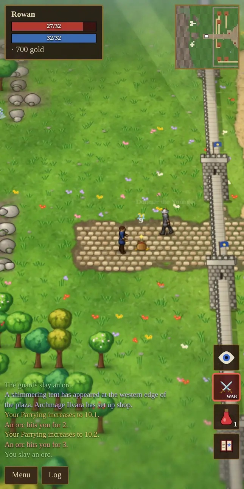
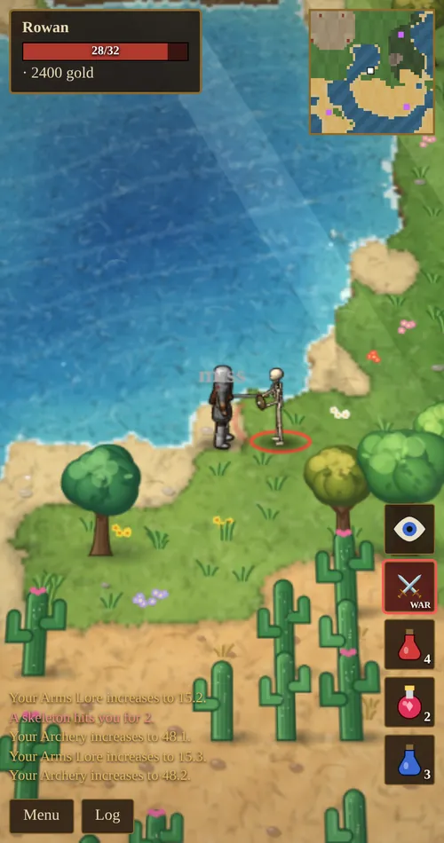
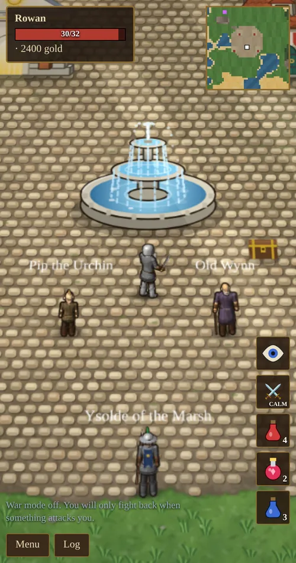
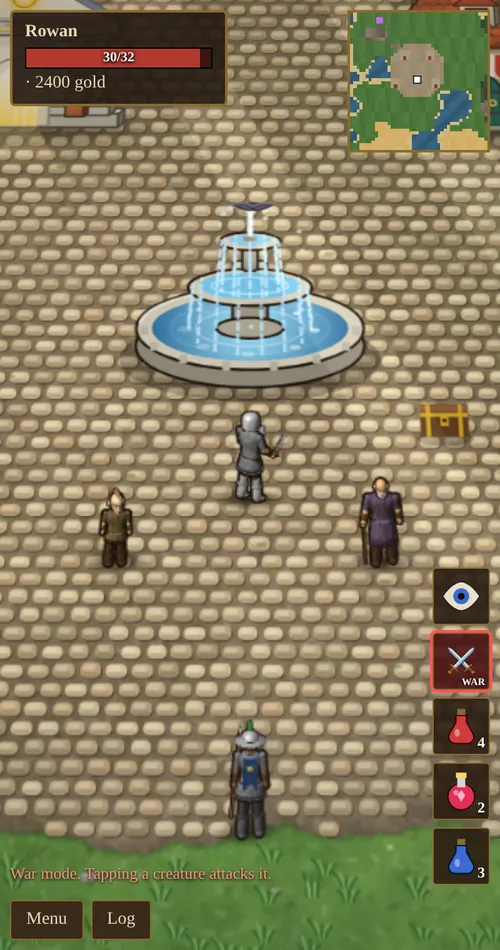
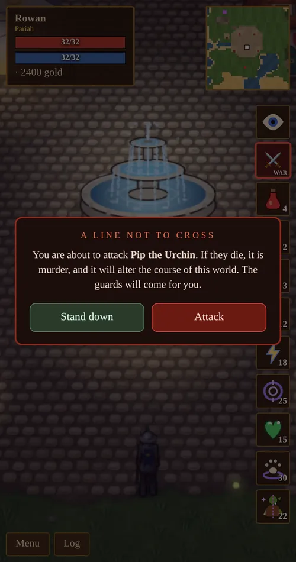

Chapter 6 of 10
Combat & War Mode
How fights work, how war mode decides what a tap does, and what happens when it all goes wrong.
Melee
Tap a monster with war mode on to attack it. Your hero walks up and swings until it is dead or you tap elsewhere.
- Hit chance is 45% plus 0.55% per point of Swordsmanship, so 100% at 100.
- Damage is 2–6, plus your weapon bonus, plus 1 per 25 Swordsmanship and 1 per 12 Strength, then multiplied by Tactics and gear. Armored foes such as player killers take off some of it.
- Speed: one swing every 1.3 seconds at 10 Dexterity, faster with more.
- Every hit can raise Swordsmanship and Tactics, and fighting with gear raises Arms Lore.

Archery
With a bow equipped, tapping a monster shoots it from range: 6 tiles for a short bow and 8 for a long bow. Each shot uses an arrow and takes 1.4 seconds at base speed.
Your hero draws the string, and the arrow leaves the bow when it is released. Bows are two-handed, so no shield. Archery also lets you shoot down birds and bats.

Taking hits
- Armor removes its value from every blow, and half its value from spells.
- Parrying blocks a blow completely. Your chance is Parrying ÷ 2 percent plus your shield’s bonus, so 50 Parrying with a heater shield gives 41%.
- Healing: potions, the Heal spell, a bat familiar, or a free visit to the temple.
Monsters only react once they have actually seen you, which needs a clear line of sight. Some bosses have special attacks with a warning on screen, such as Zhar’ak’s venom spit or Grumthar’s ground-shaking slam. Step away when you see one coming.
War mode


The crossed-swords button on the right toggles war mode. Its label shows CALM or WAR, and it glows red when war mode is on.
| War mode off (CALM) | War mode on (WAR) | |
|---|---|---|
| Tap a monster | Walk up to it. You fight back once it attacks you. | Attack it. |
| Tap a monster while sneaking | Pick its pocket (needs Sneaking 50). | Strike from the shadows for double damage. |
| Tap a townsperson | Talk to them. | Talk to them, unless your reputation is Pariah or worse. Then you can attack them, after a warning. |
| Tap a townsperson while sneaking | Pick their pocket. | As above. |
Use CALM in town and while exploring, so a stray tap never starts a fight. Switch to WAR when you mean to fight.
Attacking townsfolk
Townsfolk and guards can only be attacked once you are a Pariah or worse (reputation −700 or lower). Even then, a warning asks you to confirm. Attacking costs 150 reputation and brings the guards. Killing someone is murder. It costs 850 reputation, makes you wanted for good, and turns every ally you have made against you forever. The dead stay dead.
See endings for what happens if the town falls silent.

Sneaking, sneak attacks and pickpocketing
- Tap the eye button to sneak. Monsters are much less likely to notice you, depending on your Sneaking skill, and moving next to them makes it harder.
- Your first strike on a monster that has not noticed you does double damage.
- From Sneaking 50, or while in rat form, tapping a creature or person with war mode off picks their pocket.
- Getting caught stealing costs reputation and makes you wanted: the guards chase you for at least a minute. They must see you to follow you, so hiding or slipping away loses them. Get caught three times and the temple and shops bar their doors to you for an hour.
Death
When you die, whatever killed you takes 10% of your gold. Kill it to get the gold back. You wake at the town’s shrine with 30 health, wearing a grey ghost robe, and your gear is in your backpack. If the guards kill you while you are wanted, they take 10% of your gold as a bounty.
Player killers and thieves
Once your best fighting skill reaches 40, outlaws start roaming the wilds.
| Player killer | Style |
|---|---|
| Vorn Blackthorne | A slow, heavily armored tank with an axe or longsword and a shield. |
| Sable Nightwick | An assassin who stalks you hidden, then strikes fast with a katana or dagger. |
| Morrow the Ashen | A mage who blasts you from range. |
| Lyra Redshaft | An archer who hides and shoots from cover. |
| Kael Bloodsworn | A duelist who attacks quickly. |
Player killers carry potions, reagents and real gear that grows with your skill, sometimes including unique magic items. Defeating one returns everything they took and leaves their gear for you.
Thieves (Jory Lightfoot, Hesper Dunn and Tam Sixfinger) sneak up, snatch something from your pack, taunt you and run. Catch one to get your things back, plus their purse. Detect Hidden helps you spot both thieves and hidden killers before they reach you.
Bosses and world bosses
Every dungeon has a boss at the bottom (see dungeons). After you first defeat Gnarlfang the Warlord in the Orc Warren, the Hooded Stranger appears in the town square. Once you reach Master (90) in a fighting skill, the Stranger sends you after a world boss, marked in gold on your map:
- Malgrath the Hollow King, a sorcerer whose magic burns where steel cannot reach.
- Gorgrim Skullsplitter, Orc Overlord, who has united the warbands.
- Ignarax the Ashen Wyrm, a dragon that breathes cinder.
- Queen Vermissa, the Plague Mother, with an endless brood.
Each one that falls comes back stronger the next time. Be careful: if a world boss kills you, it burns the town. With no healer, smith or merchant, the town lies in ruins until the dawn slowly remakes it.